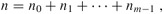

|
|
< Day Day Up > |
|
The difficulty with direct addressing is obvious: if the universe U is large, storing a table T of size |U| may be impractical, or even impossible, given the memory available on a typical computer. Furthermore, the set K of keys actually stored may be so small relative to U that most of the space allocated for T would be wasted.
When the set K of keys stored in a dictionary is much smaller than the universe U of all possible keys, a hash table requires much less storage than a direct-address table. Specifically, the storage requirements can be reduced to Θ(|K|) while we maintain the benefit that searching for an element in the hash table still requires only O(1) time. The only catch is that this bound is for the average time, whereas for direct addressing it holds for the worst-case time.
With direct addressing, an element with key k is stored in slot k. With hashing, this element is stored in slot h(k); that is, we use a hash function h to compute the slot from the key k. Here h maps the universe U of keys into the slots of a hash table T[0 ‥ m - 1]:
h : U → {0, 1, ..., m - 1} .
We say that an element with key k hashes to slot h(k); we also say that h(k) is the hash value of key k. Figure 11.2 illustrates the basic idea. The point of the hash function is to reduce the range of array indices that need to be handled. Instead of |U| values, we need to handle only m values. Storage requirements are correspondingly reduced.
There is one hitch: two keys may hash to the same slot. We call this situation a collision. Fortunately, there are effective techniques for resolving the conflict created by collisions.
Of course, the ideal solution would be to avoid collisions altogether. We might try to achieve this goal by choosing a suitable hash function h. One idea is to make h appear to be "random," thus avoiding collisions or at least minimizing their number. The very term "to hash," evoking images of random mixing and chopping, captures the spirit of this approach. (Of course, a hash function h must be deterministic in that a given input k should always produce the same output h(k).) Since |U| > m, however, there must be at least two keys that have the same hash value; avoiding collisions altogether is therefore impossible. Thus, while a well-designed, "random"-looking hash function can minimize the number of collisions, we still need a method for resolving the collisions that do occur.
The remainder of this section presents the simplest collision resolution technique, called chaining. Section 11.4 introduces an alternative method for resolving collisions, called open addressing.
In chaining, we put all the elements that hash to the same slot in a linked list, as shown in Figure 11.3. Slot j contains a pointer to the head of the list of all stored elements that hash to j; if there are no such elements, slot j contains NIL.
The dictionary operations on a hash table T are easy to implement when collisions are resolved by chaining.
CHAINED-HASH-INSERT(T, x)
insert x at the head of list T[h(key[x])]
CHAINED-HASH-SEARCH(T, k)
search for an element with key k in list T[h(k)]
CHAINED-HASH-DELETE(T, x)
delete x from the list T[h(key[x])]
The worst-case running time for insertion is O(1). The insertion procedure is fast in part because it assumes that the element x being inserted is not already present in the table; this assumption can be checked if necessary (at additional cost) by performing a search before insertion. For searching, the worst-case running time is proportional to the length of the list; we shall analyze this operation more closely below. Deletion of an element x can be accomplished in O(1) time if the lists are doubly linked. (Note that CHAINED-HASH-DELETE takes as input an element x and not its key k, so we don't have to search for x first. If the lists were singly linked, it would not be of great help to take as input the element x rather than the key k. We would still have to find x in the list T[h(key[x])], so that the next link of x's predecessor could be properly set to splice x out. In this case, deletion and searching would have essentially the same running time.)
How well does hashing with chaining perform? In particular, how long does it take to search for an element with a given key?
Given a hash table T with m slots that stores n elements, we define the load factor α for T as n/m, that is, the average number of elements stored in a chain. Our analysis will be in terms of α, which can be less than, equal to, or greater than 1.
The worst-case behavior of hashing with chaining is terrible: all n keys hash to the same slot, creating a list of length n. The worst-case time for searching is thus Θ(n) plus the time to compute the hash function-no better than if we used one linked list for all the elements. Clearly, hash tables are not used for their worst-case performance. (Perfect hashing, described in Section 11.5, does however provide good worst-case performance when the set of keys is static.)
The average performance of hashing depends on how well the hash function h distributes the set of keys to be stored among the m slots, on the average. Section 11.3 discusses these issues, but for now we shall assume that any given element is equally likely to hash into any of the m slots, independently of where any other element has hashed to. We call this the assumption of simple uniform hashing.
For j = 0, 1, ..., m - 1, let us denote the length of the list T[j] by nj, so that
| (11.1) |  |
and the average value of nj is E[nj] = α = n/m.
We assume that the hash value h(k) can be computed in O(1) time, so that the time required to search for an element with key k depends linearly on the length nh(k) of the list T[h(k)]. Setting aside the O(1) time required to compute the hash function and to access slot h(k), let us consider the expected number of elements examined by the search algorithm, that is, the number of elements in the list T[h(k)] that are checked to see if their keys are equal to k. We shall consider two cases. In the first, the search is unsuccessful: no element in the table has key k. In the second, the search successfully finds an element with key k.
In a hash table in which collisions are resolved by chaining, an unsuccessful search takes expected time Θ(1 + α), under the assumption of simple uniform hashing.
Proof Under the assumption of simple uniform hashing, any key k not already stored in the table is equally likely to hash to any of the m slots. The expected time to search unsuccessfully for a key k is the expected time to search to the end of list T[h(k)], which has expected length E[nh(k)] = α. Thus, the expected number of elements examined in an unsuccessful search is α, and the total time required (including the time for computing h(k)) is Θ(1 + α).
The situation for a successful search is slightly different, since each list is not equally likely to be searched. Instead, the probability that a list is searched is proportional to the number of elements it contains. Nonetheless, the expected search time is still Θ(1 + α).
In a hash table in which collisions are resolved by chaining, a successful search takes time Θ(1 + α), on the average, under the assumption of simple uniform hashing.
Proof We assume that the element being searched for is equally likely to be any of the n elements stored in the table. The number of elements examined during a successful search for an element x is 1 more than the number of elements that appear before x in x's list. Elements before x in the list were all inserted after x was inserted, because new elements are placed at the front of the list. To find the expected number of elements examined, we take the average, over the n elements x in the table, of 1 plus the expected number of elements added to x's list after x was added to the list. Let xi denote the ith element inserted into the table, for i = 1, 2, ..., n, and let ki = key[xi]. For keys ki and kj , we define the indicator random variable Xij = I{h(ki) = h(kj)}. Under the assumption of simple uniform hashing, we have Pr{h(ki) = h(kj)} = 1/m, and so by Lemma 5.1, E[Xij] = 1/m. Thus, the expected number of elements examined in a successful search is
Thus, the total time required for a successful search (including the time for computing the hash function) is Θ(2 + α/2 - α/2n) = Θ(1 + α).
What does this analysis mean? If the number of hash-table slots is at least proportional to the number of elements in the table, we have n = O(m) and, consequently, α = n/m = O(m)/m = O(1). Thus, searching takes constant time on average. Since insertion takes O(1) worst-case time and deletion takes O(1) worst-case time when the lists are doubly linked, all dictionary operations can be supported in O(1) time on average.
Demonstrate the insertion of the keys 5, 28, 19, 15, 20, 33, 12, 17, 10 into a hash table with collisions resolved by chaining. Let the table have 9 slots, and let the hash function be h(k) = k mod 9.
Professor Marley hypothesizes that substantial performance gains can be obtained if we modify the chaining scheme so that each list is kept in sorted order. How does the professor's modification affect the running time for successful searches, unsuccessful searches, insertions, and deletions?
Suggest how storage for elements can be allocated and deallocated within the hash table itself by linking all unused slots into a free list. Assume that one slot can store a flag and either one element plus a pointer or two pointers. All dictionary and free-list operations should run in O(1) expected time. Does the free list need to be doubly linked, or does a singly linked free list suffice?
|
|
< Day Day Up > |
|